This is how your AWS console should look like after you sign in.
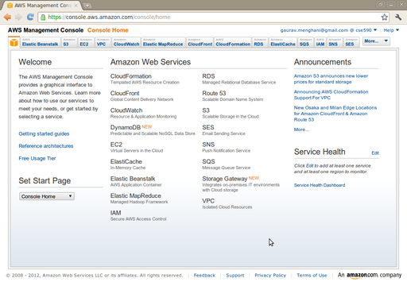
Select Amazon EC2 from the top-bar, and click on 'Launch Instance'.
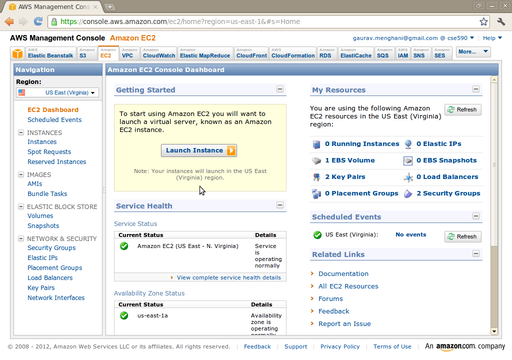
Select 'Classic Wizard' and click on Continue.
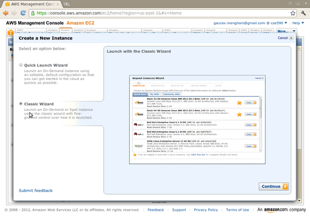
Select 'Community AMI' and search for 'gpu'. Select the "CentOS 5.5 GPU HVM AMI".
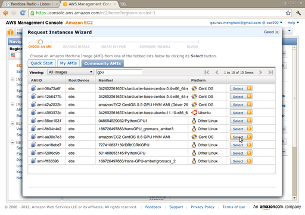
Set the 'Instance Type' as 'Cluster GPU'.
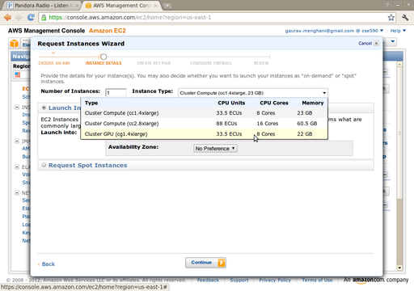
Click on 'Continue'.
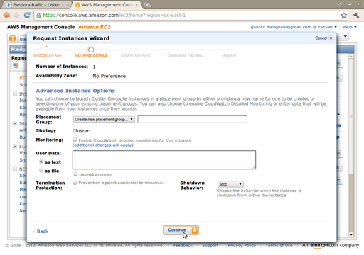
Click on 'Continue'.
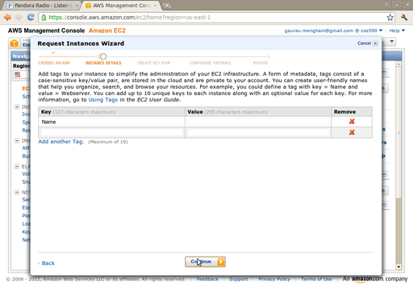
Type in a name for the key pair, and click on 'Create & Download Your Key Pair'.
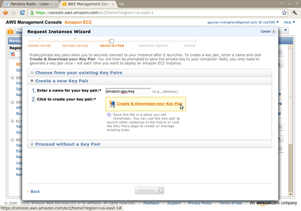
Set the Security Group as shown below.
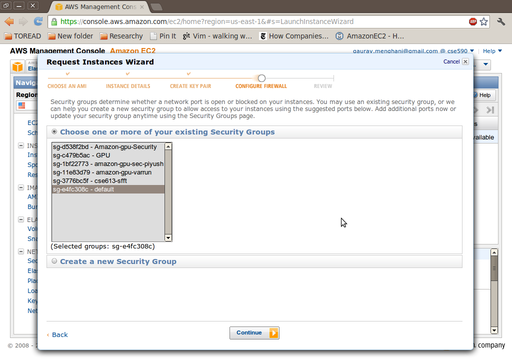
Verify the details and click on 'Launch'.
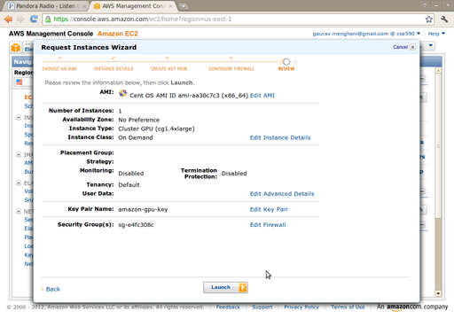
You should receive this confirmation.
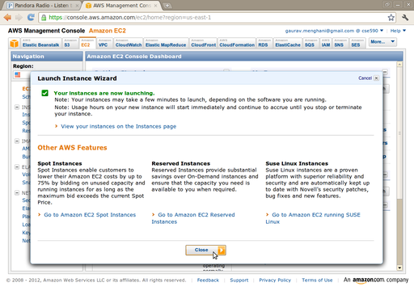
Your instance should be up and running in a couple of minutes.
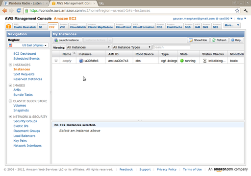
Select the instance, and scroll down the properties to see the Public DNS of the instance.
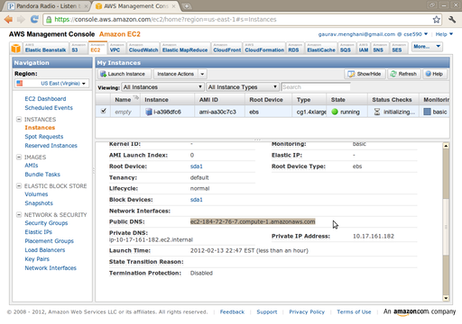
Here is how I ssh-ed into my instance, I fired up a terminal and typed the following command (please replace the host-name with the Public DNS entry that you have for your instance):
reddragon@reddragon-laptop:~$ ssh root@ec2-184-72-76-7.compute-1.amazonaws.com
-i amazon-gpu-key.pem
We will update the CUDA driver, install the toolkit and the SDK on this instance. The CUDA Downloads page has all the stuff we need, especially the CUDA Getting Started Linux Guide.
[root@ip-10-17-144-169 ~]# wget http://developer.download.nvidia.com/compute/cuda/4_
1/rel/drivers/NVIDIA-Linux-x86_64-285.05.33.run
[root@ip-10-17-144-169 ~]# chmod +x NVIDIA-Linux-x86_64-285.05.33.run
[root@ip-10-17-144-169 ~]# ./NVIDIA-Linux-x86_64-285.05.33.run
[root@ip-10-17-144-169 ~]# wget http://developer.download.nvidia.com/compute/cuda/4_
0/toolkit/cudatoolkit_4.0.17_linux_64_rhel5.5.run
[root@ip-10-17-144-169 ~]# chmod +x cudatoolkit_4.0.17_linux_64_rhel5.5.run
[root@ip-10-17-144-169 ~]# ./cudatoolkit_4.0.17_linux_64_rhel5.5.run
Add the following lines to the end of your ~/.bashrc file:
export PATH=/usr/local/cuda/bin:$PATH
export LD_LIBRARY_PATH=/usr/local/cuda/lib:/usr/local/cuda/lib64:$LD_LIBRARY_PATH
Now, update your environment variables.
[root@ip-10-17-144-169 bin]# . ~/.bashrc
Now check if the GPU is fine
[root@ip-10-17-144-169 ~]# nvidia-smi -a -q
Your output should be like the following:
==============NVSMI LOG==============
Timestamp : Sat Apr 7 10:33:16 2012
Driver Version : 285.05.33
Attached GPUs : 2
...
Check if nvcc is fine
[root@ip-10-17-144-169 ~]# nvcc -V
Your output should be like the following:
nvcc: NVIDIA (R) Cuda compiler driver
Copyright (c) 2005-2011 NVIDIA Corporation
Built on Thu_May_12_11:09:45_PDT_2011
Cuda compilation tools, release 4.0, V0.2.1221
Now, you should be set to use CUDA on AWS.
| Table of Contents | t |
|---|---|
| Exposé | ESC |
| Full screen slides | e |
| Presenter View | p |
| Source Files | s |
| Slide Numbers | n |
| Toggle screen blanking | b |
| Show/hide slide context | c |
| Notes | 2 |
| Help | h |